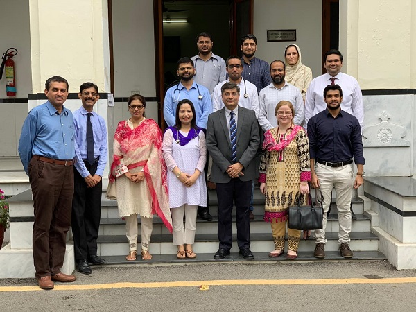

The Institute of T.B and Chest Medicine was established in 1920. Prof. Muhammad Saqib Saeed is heading the Institute since 2011. This Institution was renovated in 2012. The Institute is equipped with X-Ray, Ultrasound Machines, Video Bronchoscope, Video Thoracoscope, Fluorescent Microscope, Sleep Lab, Gene XPERT MTB/RIF Machine and separate MDR-TB diagnostic and treatment facilities. A 50 seated Seminar Room fully equipped with audiovisual facilities has been built. The Institute of Chest Medicine houses 66 patients and runs a very active Outpatient Department catering for over 60,000 patients a year. The Institute is running Postgraduate Training Programs for MD (Pulmonology), FCPS (Medicine), FCPS, MCPS & DTCD in Pulmonology and undergraduate training for MBBS.”
MBBS, FCCP (USA) MRCP (UK) FRCP (EDIN)
The Institute of T.B and Chest Medicine was established in 1920. Prof. Muhammad Saqib Saeed is heading the Institute since 2011. This Institution was renovated in 2012. The Institute is equipped with X-Ray, Ultrasound Machines, Video Bronchoscope, Video Thoracoscope, Fluorescent Microscope, Sleep Lab, Gene XPERT MTB/RIF Machine and separate MDR-TB diagnostic and treatment facilities. A 50 seated Seminar Room fully equipped with audiovisual facilities has been built. The Institute of Chest Medicine houses 66 patients and runs a very active Outpatient Department catering for over 60,000 patients a year. The Institute is running Postgraduate Training Programs for MD (Pulmonology), FCPS (Medicine), FCPS, MCPS & DTCD in Pulmonology and undergraduate training for MBBS.”
Dr. Salman Ayyaz
Dr.Afshan Qureshi
Dr. Asif Hanif
Dr. Yasir Nasir
Associate Professor
Assistant Professor(Radiology)
Assistant Professor
Senior Registrar
Senior Registrar
MBBS, MCPS, FCPS(PUL), FCPS(CCM)
MBBS, DMRD,MD (Radiology)
MBBS, FCPS, DTCD
MBBS, FCPS(Pulmo)
MBBS, FCPS(Pulmo)
Monday
WEDNESDAY
Friday
PROF. M. SAQIB SAEED
DR. ASIF HANIF
DR. SALMAN AYYAZ
DR. YASIR NASIR
DR. AFFAF JAVED
DR. FAISAL